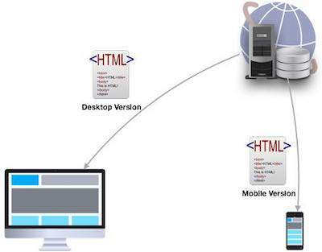

Mobile SEO Techniques
Millions of users these days access the web using smartphones running on Android, iOS, or Windows. Hence, it has become imperative that websites adapt themselves to this changing environment and make suitable changes in their website design to attract more viewership.
The desktop version of a site might be difficult to view and use on a mobile device. The version that is not mobile-friendly requires the user to pinch or zoom in order to read the content. Users find this a frustrating experience and are likely to abandon the site. In contrast, a mobile-friendly version is readable and immediately usable.
A recent Google update makes it mandatory that a website should be mobile-friendly to be effective on Mobile Search Engines. Note that a website that is not mobile-friendly will not have any impact on regular search engines either.
In this chapter, we will see how to make a website mobile-friendly in order to ensure the visitors who access the website from mobile devices have an optimized experience.
What is Mobile SEO?
Mobile Search Engine Optimization is the process of designing a website to make it suitable for viewing on mobile devices of different screen sizes having low bandwidth. Apart from following all the SEO rules which are applicable to a desktop website, we need to take additional care while designing a website for mobile devices. A website is mobile friendly if it has the following attributes −
A good mobile website has a responsive design which performs well on desktops as well as mobile devices. It not only reduces the maintenance of the website but also makes the content consistent for the search engines.
The contents of a good mobile website are easy to read on a mobile device without having to zoom the screen. It has appropriate fonts, colors, and layouts.
It is easy to navigate through a good mobile website on a small screen. It provides links and buttons that can be easily maneuvered using a finger.
A good mobile website is lightweight such that it takes less bandwidth and time to load on mobile networks.
The Home Page of a mobile website plays the most important role in connecting users to the content they are looking for. Therefore, good mobile websites make sure the most important links are displayed on the Home Page so that they get enough visibility.
The ranking of a website depends heavily on how user friendly it is. You can follow the guidelines given below to design a great mobile-friendly website.
Optimize Your Site for Mobile
If your site is already optimized for search engines, then it should not be too difficult to optimize it for mobile devices. First, let us understand what it takes to go mobile. We can categorize the steps into three broad categories −
Step 1 − Select a Mobile Configuration
Step 2 − Inform Search Engines
Step 3 − Avoid Common Mistakes
Select a Mobile Configuration
There are three different mobile configurations that you can choose from −
Step 1 − Responsive Web Design
Step 2 − Dynamic Serving
Step 3 − Separate URLs
Each has its own advantages and disadvantages. Google recommends responsive design, however it supports all three configurations. The following table shows how the mobile configuration affects your URL and HTML code −
| Mobile Configuration | URL | HTML |
|---|---|---|
| Responsive Web Design | Stays the same | Stays the same |
| Dynamic Serving | Stays the same | Different HTMLs |
| Separate URLs | Different URLs | Different HTMLs |
Responsive Web Design
Google recommends responsive web design become it is the simplest mobile configuration and very easy to implement. It serves the same HTML code on the same URL, however it adjusts the display based on the screen size of the mobile device.
Dynamic Serving
Dynamic serving is a type of mobile configuration where the URL of your website remains unchanged, but it serves different HTML content when accessed from a mobile device.
When your content is dynamically served from the server, make sure you inform Google that the content it is crawling may look different on mobile devices. A major drawback of this approach is that you will have to do additional processing on your content at the server level before severing it to the user. This approach puts unnecessary load on your server and makes it slow.
Separate URLs
When you maintain two different URLs — one for mobile users and another for desktop users – make sure you inform Google explicitly when to serve which version. Google does not recommend separate URLs because it can detect automatically that your mobile pages are different from your desktop pages.
This approach is not practical when you have a big website because maintaining two versions of the same website will require double the effort and money. At the same time, you cannot avoid various discrepancies in your content while maintaining two versions.
From the viewpoint of SEO, each URL performs separately. Hence your desktop ranking will never be added to the mobile ranking and they will always be assumed as separate websites. We don’t recommend maintaining different URLs for mobile and desktop versions if you want to draw the benefits of SEO.
Inform Search Engines
Make sure Google and other search engines understand your mobile configuration. Most important of all, Google must understand your page so that it can rank your website properly. How you inform Google depends on which mobile configuration — responsive web design, dynamic serving, or separate URLs — you have opted for.
In case your site has a responsive design, Google’s algorithms can understand it automatically without you having to inform Google. When you have a responsive design, just make sure you have the following meta-tag in your webpage header −
<meta name="viewport" content="width=device-width, initial-scale=1.0">
The viewport decides how your webpage will be displayed on a device. A site with responsive design varies its size based on the size of the device screen. Declare a viewport so that your webpage displays correctly on any device.
If your website is dynamically served, make sure you allow Google detect your configuration using the Vary HTTP header −
Vary: User-Agent
The Vary header is important to tell the search engines that different content will be served on desktops and mobile devices. This header is really important when your content is served by any cache system like a Content Delivery Network and those systems will make use of this header while serving content on different devices.
In case you maintain separate URLs, e.g., example.com and m.example.com, then you can inform Google by adding a special link rel=alternate tag in your desktop version and vice versa as follows.
Desktop page should have following in its header: <link rel="alternate" media="only screen and (max-width: 640px)" href="http://m.example.com" > Mobile page should have following in its header: <link rel="canonical" href="http://www.example.com" >
Avoid Common Mistakes
In order to optimize your website for mobile devices, make sure you avoid committing the following mistakes −
Slow Mobile Pages − Mobile networks are slower as compared to wired Internet networks, so it is important to pay attention to how fast your mobile pages load. It is a critical Google ranking factor. Use a mobile SEO tool to find out your mobile page speed. Google provides a number of good tools that you can use. Browse the following link − https://www.google.com/webmasters/tools/mobile-friendly/
Don't Block CSS and JavaScript − Google recommends to use inline CSS and Javascripts for mobile friendly websites so that they can be downloaded along with the content. So if you don’t have much CSS, then try to adjust it within the tag itself; but if you are using a lot of CSS in separate files, then try to include it at the bottom which will stop blocking the other content being downloaded. The same rule applies to Javascript, which can be kept inside the page itself or included at the bottom of the page. If you can avoid including the file at the top of the page, then make use of async attribute while including them.
<script async type="text/javascript" src="jquery.js"></script>
Mobile Redirects − Since mobile networks are normally slow, too many redirects can hurt your page speed. If you are maintaining multiple URLs, make sure all your links point to the relevant pages. In case you maintain multiple URLs and you recognize a user is visiting a desktop page from a mobile device and you have an equivalent mobile page at a different URL, then redirect the user to that URL instead of displaying a 404 error.
Heavy Images − Heavy images reduce the load time, however we cannot completely get rid of them since they are useful and effective. Therefore you should maintain a good balance between text and heavy images. Use a good tool to optimize your images and save them at low resolution to avoid heavy downloads.
Avoid plug-ins and pop-ups − Plug-ins like Flash and Java may not be available on user’s mobile device. Always ensure you don’t have any unplayable content on your mobile page. Avoid using pop-ups on mobile pages because it becomes quite clumsy to close these pop-ups on a mobile device.
While creating a mobile page, always keep in mind that the user has limited space to work on. So, you need to be as concise as possible while creating titles, URLs, and meta-descriptions – of course without compromising the essence or quality of information.
Useful Tools
Here is a list of some useful tools that you can use to find out how mobile friendly your site is −
Google Webmaster Tools − Use the available Google tools and techniques to understand what should be used and what should be avoided while designing desktop as well as mobile websites.
Mobile Emulator − It lets you see how your site appears on a wide variety of mobile devices.
Moz Local − Use this tool to ensure that your local SEO is in order.
Responsive Web Design Testing Tool − Use this tool to see how your responsive site looks like on a variety of mobile devices with different standard screen sizes.
Screaming Frog − This is a useful tool that allows you to analyze your site and double-check all the redirects.
User Agent Switcher − This is a Firefox add-on that you can use to find out how your site looks like when accessed from a different user agent.